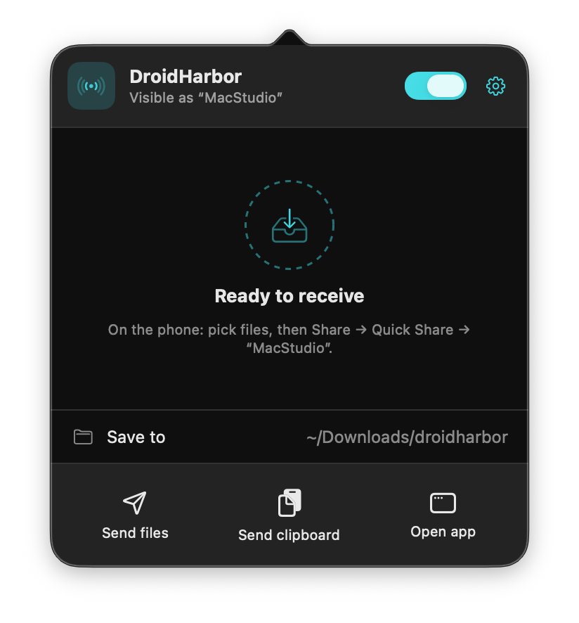
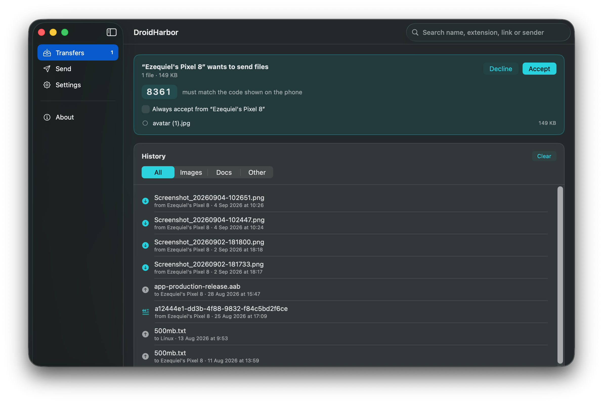
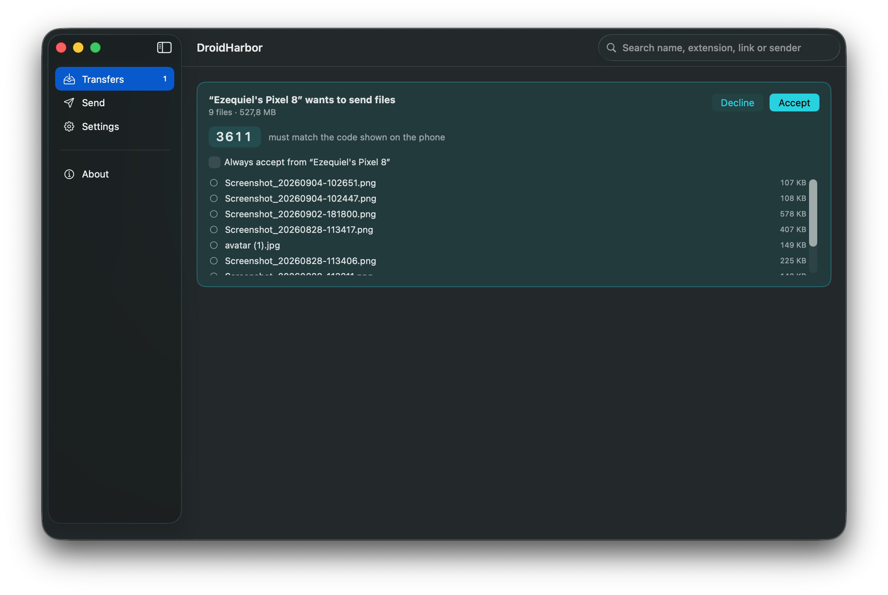
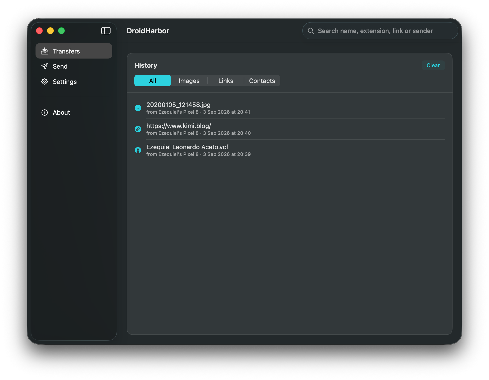
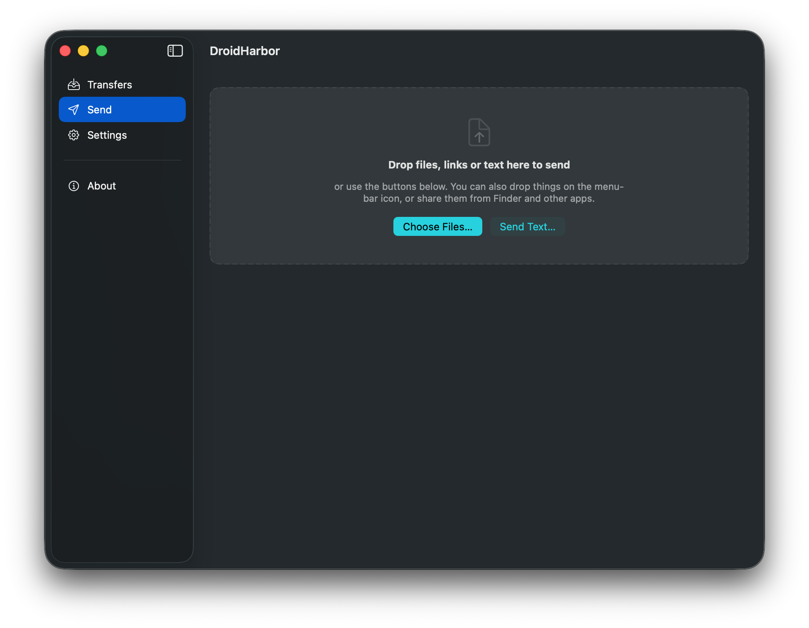
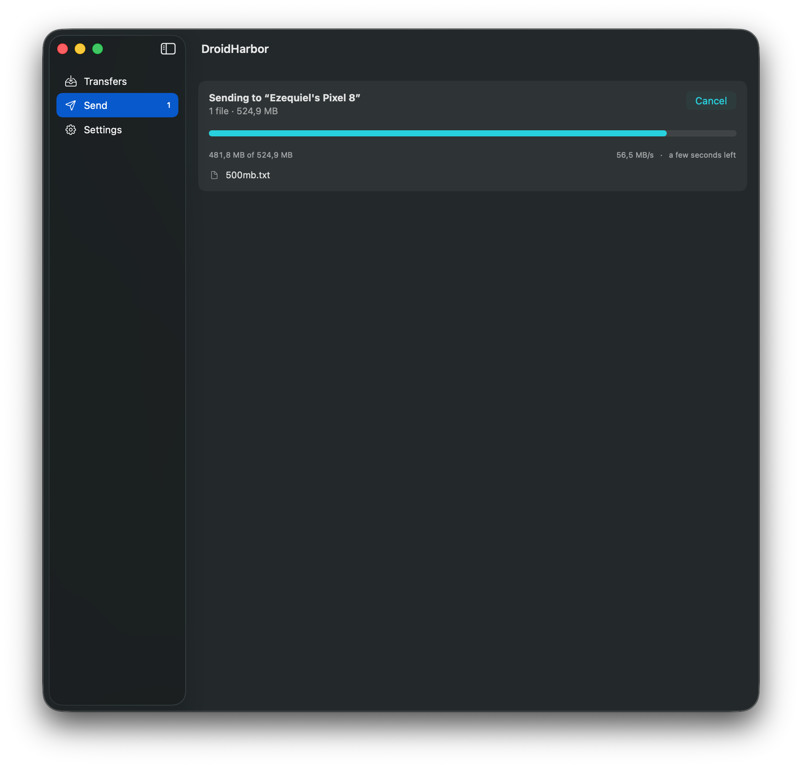
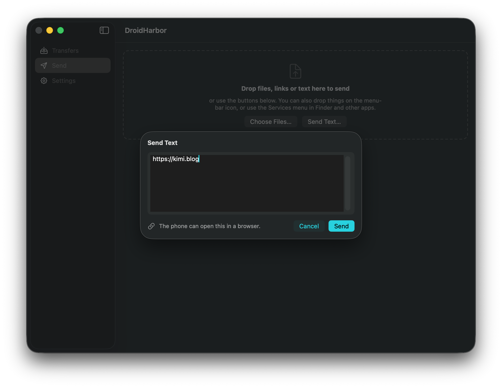
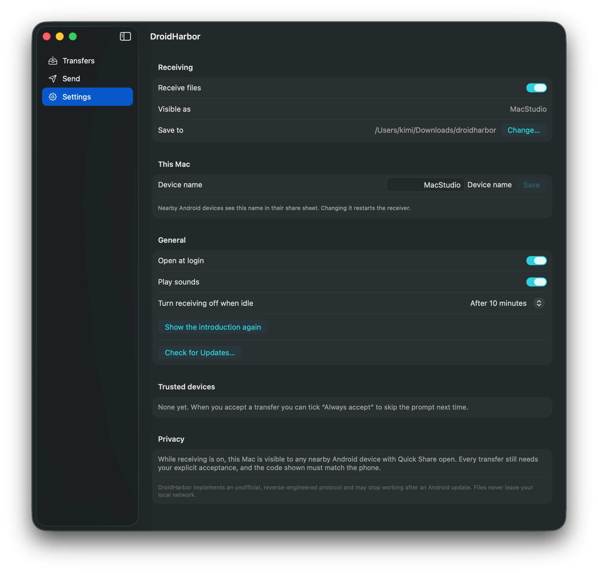

macOS · Quick Share
Your Mac, in Android's share sheet.
DroidHarbor puts your Mac where your phone already looks. Pick a photo, tap Share → Quick Share, and it lands in a folder you chose. Send files, links and text back the same way. Nothing goes through the cloud, and there is no account to make.
What it is
Quick Share, without the missing half.
Android has excellent built-in sharing between nearby devices. Macs were never invited. DroidHarbor speaks the same protocol, so your phone finds your Mac in the share sheet it already uses. No app on the phone, no QR codes, no uploading a file to yourself.
Receive from the phone
Photos, videos, APKs and documents, plus links, contacts, calendar events, addresses and phone numbers. Each one is handled as what it actually is.
Send back to the phone
Drop files on the menu-bar icon, or send a link or a note straight from the Mac. Right-click in Finder works too.
Stays on your network
Devices find each other over the local network and transfer directly. No cloud service, no account, no telemetry.
Things that travel well
- Photos
- Videos
- Documents
- APKs
- Audio
- Links
- Plain text
- Contacts (.vcf)
- Calendar events (.ics)
- Phone numbers
- Addresses
- Wi-Fi credentials
Install
Two minutes, then forget it's there.
- Get the app.
Download the notarized DMG from the releases page, or build it yourself with the commands below.
- Drag DroidHarbor to Applications, then open it.
The DMG shows the Applications folder beside the app, so it is one drag.
- Allow local network access when macOS asks.
This is how the phone and the Mac find each other. Bluetooth, if you allow it, only makes discovery faster.
- Turn the extension on, so you can send from Finder.
macOS ships third-party extensions switched off. To get Share… → DroidHarbor in Finder, enable it in System Settings → General → Login Items & Extensions.
- Switch Receiving on from the menu-bar icon.
Your Mac now appears in nearby Android share sheets under the name shown in Settings.

Build from source
Requires Rust (stable), Xcode, protoc and Tuist.
# clone into a plain folder name: macOS treats a .app directory as a bundle
git clone https://github.com/eaceto/DroidHarbor.app.git droidharbor
cd droidharbor/apps/macos
tuist generate
# or produce a signed, notarized DMG (needs a Developer ID)
./release.sh 1.0.0There is also a headless CLI for testing the protocol without the app:
cargo run -p dh-cli -- --helpPhone → Mac
Receiving a file
Anything you can share on Android can come to the Mac. The Mac stays invisible until you switch Receiving on, and every transfer needs your explicit acceptance.
- On the Mac: switch Receiving on.
Set it to turn itself off after 10 minutes, 30 minutes or an hour in Settings if you would rather not stay visible.
- On the phone: pick the file → Share → Quick Share → tap your Mac.
- Check the four-digit code matches, then accept.
The same code appears on both screens. It is what tells you the device you tapped is the device you are talking to.
- The file lands in your folder.
By default
~/Downloads/droidharbor. Received items are never overwritten. A second copy of the same name gets its own.


Trusted devices. Tick Always accept when you accept a transfer and that phone skips the prompt next time. Devices are matched by the name they announce, which a device chooses for itself, so trust the ones you own.
Everything that arrived, in one place
History keeps files, links, text, contacts, events, numbers and addresses together, each with the actions that suit it: reveal a file in Finder, open a link, call a number, add a contact. Filter by type, or search by name, extension, domain or sender.

~/.droidharbor/history.json, as plain readable JSON you own.Mac → Phone
Sending files
The phone has to be looking: open Quick Share on Android (Settings → Connected devices, or the Files app) so it becomes discoverable, then pick it from the list on the Mac and accept the transfer on the phone.
- Menu barDrag files onto the DroidHarbor icon and drop.
- Send tabDrop them in the window, or choose them with ⌘O.
- FinderRight-click a file → Share… → DroidHarbor.
- ProgressSpeed and time remaining while it goes, per item.


Mac → Phone
Sending a link or a note
Not everything worth sending is a file. Copy a URL on the Mac and it arrives on the phone as a link it offers to open, not as a text file to find and delete later. DroidHarbor tells the phone what kind of text it is sending, so the phone offers the right thing.
| What you send | What the phone offers |
|---|---|
| A web address | Open it in the browser |
| A phone number | Dial it |
| A map link or address | Open it in Maps |
| Anything else | Plain text, ready to copy |
- Clipboard⇧⌘V, or Send clipboard text in the menu bar.
- ComposeSend Text… in the Send tab opens a box, pre-filled from the clipboard.
- DragDrag selected text, or a link from your browser's address bar, onto the icon.
- ShareSelect text in any app → Share… → DroidHarbor.

Reference
Keyboard and settings
| Shortcut | Does |
|---|---|
| ⌘R | Start or stop receiving |
| ⌘O | Choose files to send |
| ⇧⌘V | Send the clipboard's text |
| ⌘1 ⌘2 ⌘3 | Transfers, Send, Settings |
- NameWhat nearby phones call this Mac.
- FolderWhere received files land.
- IdleTurn receiving off by itself after 10, 30 or 60 minutes.
- LoginOpen at login, quietly in the menu bar.
- AlertsNotifications with Open and Show in Finder, and optional sounds.

Honesty
What it does, and what it can't
Your files stay yours
Transfers happen directly between the two devices on your local network. There is no server in the middle, no account, no analytics, and release builds write no logs. History is a JSON file in your home folder.
You are always asked
The Mac is invisible until you switch receiving on, every transfer needs acceptance, and the four-digit code must match the phone. Trusted devices are the one exception, and you choose them one at a time.
Unofficial protocol. Quick Share (Nearby Sharing) has no public specification. DroidHarbor implements a reverse-engineered version of it, built on a fork of the rquickshare library, and an Android or Play Services update could break it without warning. It is not affiliated with, or endorsed by, Google. It exists to let a desktop interoperate with a protocol Android already speaks: it circumvents no access control or copy protection, ships no Google code, and requires no modification of the phone.
No warranty. DroidHarbor is provided as is, without warranty of any kind. It moves your files over a protocol that can change underneath it, so confirm that important transfers arrived intact and never treat a transferred copy as your only copy.
Current limits. Folders cannot be sent yet, only files. One transfer runs at a time. The phone must have Quick Share open on screen to be discoverable when the Mac is the one sending.